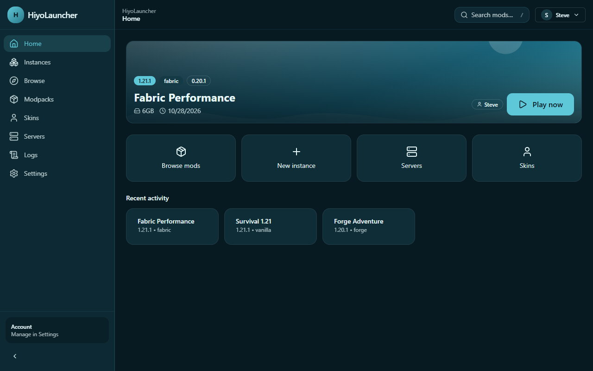

Nhanh & ổn định
Tải song song, kiểm SHA1, ghi file atomic, retry có backoff. Instance không bao giờ bị hỏng dở.
HiyoLauncher là launcher Minecraft hiện đại: cài mod, modpack, shader và resource pack trực tiếp từ Modrinth, hỗ trợ Fabric/Quilt/Forge/NeoForge, tài khoản Microsoft và offline, cùng giao diện Pastel Ocean cá nhân hoá sâu.

Không còn cảnh mở 5 công cụ khác nhau để cài mod, sửa Java hay tìm crash report.
Tải song song, kiểm SHA1, ghi file atomic, retry có backoff. Instance không bao giờ bị hỏng dở.
Tìm, cài, cập nhật mod và modpack ngay trong app. Tự resolve dependency và kiểm tra phiên bản.
Fabric, Quilt, Forge và NeoForge — tự chọn phiên bản loader phù hợp với Minecraft.
Microsoft device-code login và tài khoản offline cho server LAN/offline. Token được mã hoá bằng OS.
Theme, accent color, nền ảnh/video, blur, mật độ, font, sidebar, cover riêng từng instance.
Nhận diện OOM, sai Java, thiếu/trùng mod, lỗi GLFW và đưa gợi ý sửa cụ thể thay vì log thô.
Đọc servers.dat, ping trạng thái, quick join đúng tài khoản, preview skin 3D và upload skin.
MIT, mã nguồn công khai trên GitHub. Không telemetry, không khoá tính năng, không quảng cáo.
Tối, dịu mắt, nhiều khoảng thở. Mọi theme, màu nhấn và nền đều đổi được trong Cài đặt.
Bản Windows có sẵn. macOS và Linux được build tự động qua GitHub Actions và đăng lên Releases.
Bộ cài .exe, chọn thư mục cài, tạo shortcut. Bản chưa ký số — SmartScreen có thể cảnh báo.
Tải .exeApple Silicon và Intel. Build chưa ký số; mở bằng chuột phải → Open nếu macOS chặn.
AppImage chạy trực tiếp, hoặc gói .deb cho Debian/Ubuntu. Build tự động bởi CI.
Nếu chưa thấy bản macOS/Linux trong release, CI đang build — xem lại GitHub Actions.
Cần Azure public client ID (miễn phí). Xem hướng dẫn, rồi dán vào Settings → Advanced. Offline mode vẫn dùng được ngay.
Chỉ dành cho server offline/LAN và người đã sở hữu Minecraft. Launcher không phân phối game và không vượt qua bản quyền cho server online.
Windows SmartScreen và macOS Gatekeeper có thể cảnh báo lần đầu. Đây là app open-source chưa có chứng chỉ ký số thương mại.